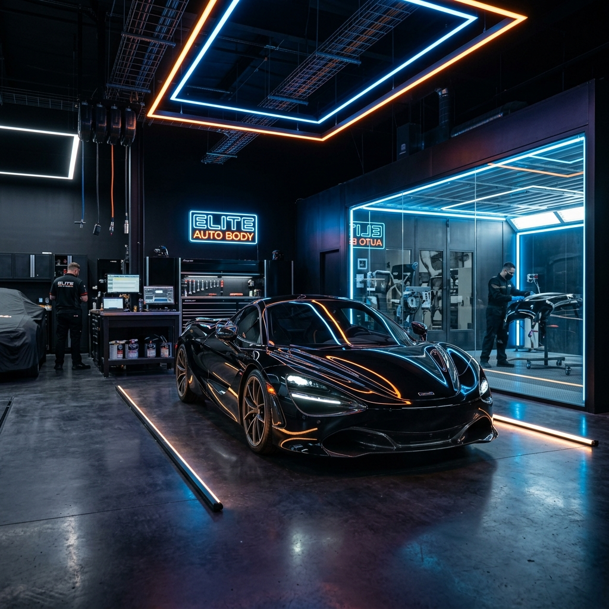

Pengalaman
Profil Perusahaan
Mis Auto Color adalah bengkel spesialis perbaikan body dan pengecatan mobil premium yang berbasis di Jakarta. Kami didirikan dengan satu tujuan utama: mengembalikan dan meningkatkan nilai estetika mobil pelanggan kami pada level tertinggi yang dimungkinkan.
Dengan memadukan tenaga ahli profesional yang telah malang melintang di industri otomotif, material berkualitas premium import, dan peralatan teknologi mutakhir (seperti ruang oven kedap debu), kami menjamin setiap hasil pengerjaan kami memenuhi standar pameran (show-quality).
- Teknisi Berpengalaman & Bersertifikat
- Ruang Oven Pengecatan Kedap Debu
- Garansi Hasil Pengerjaan
- Material Cat & Coating Premium
Visi & Misi
Pondasi yang mendorong kami untuk terus berinovasi dan memberikan pelayanan paripurna kepada setiap pelanggan setia kami.
Visi Kami
Menjadi pusat perbaikan body dan cat mobil terdepan dan paling terpercaya di Indonesia yang dikenal karena kualitas, inovasi, dan kepuasan pelanggan yang tak tertandingi.
Misi Kami
Memberikan solusi estetik mobil terbaik menggunakan bahan premium berstandar internasional, menjaga transparansi, mempercepat waktu pengerjaan tanpa mengurangi kualitas, serta terus meningkatkan keahlian tim melalui pelatihan profesional.